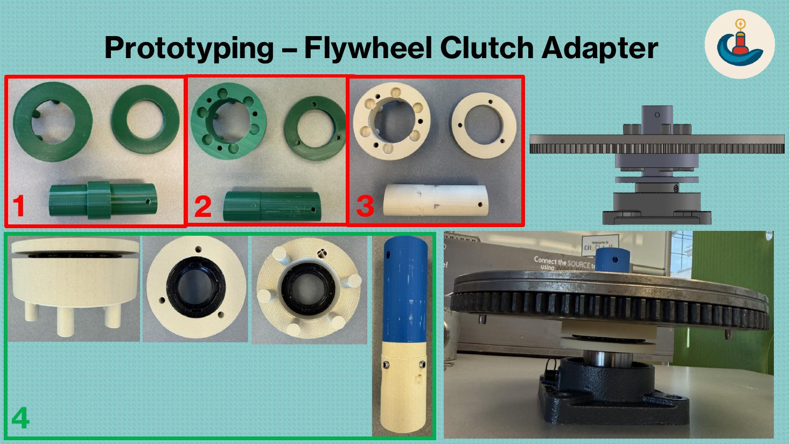
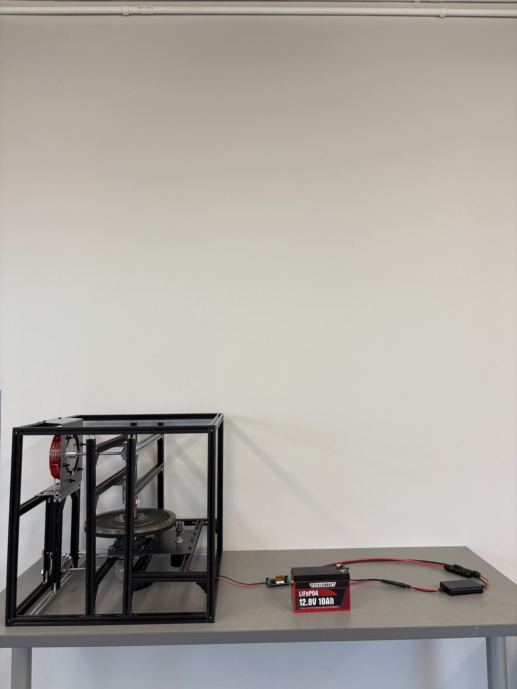

My role
- Led the CAD in SOLIDWORKS through three design iterations
- Designed, 3D-printed and CNC-machined every custom part
- Sized the gear train and generator torque (with Blair Bishop)

How it works
Each wave pulls a rope on a recoil starter. A one-way clutch, two gearboxes and a flywheel speed that pull up from about 20 RPM to 4,000 RPM, spinning a generator that charges a 12.8 V battery.
Custom parts, made by hand
Nothing off the shelf connected the recoil starter, clutch, flywheel and gearboxes. I measured each part, modeled adapters to join them, iterated with 3D prints, then machined the finals in aluminum on a Tormach CNC mill.


Test, fail, fix
The first build had a slipping shaft coupling, a generator that needed more torque than the drivetrain gave, and a misaligned frame. V2 fixed all three with one continuous shaft, a lower-torque motor and a re-cut, sealed frame.


Results
Every simulated wave beat the 0.3125 W target, averaging 0.8 W. Measured drivetrain speeds matched predictions within about 15%.